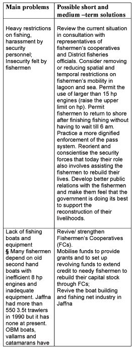
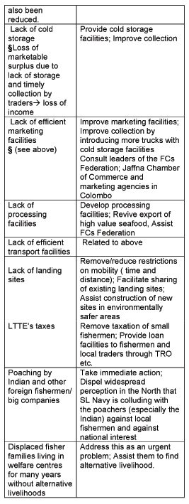

Interventions · November 2003
Persistent Deprivation of Jaffna Peninsula’s Fishing Communities: Need for Sensitive and Creative Solutions
I read Champika Liyanaarachchi's report captioned 'Sri Lankan Army on Collision Course With Fishermen' with concern. Indeed the damage caused to coral reefs due to the construction of landing sites has to be taken seriously. However, it is not fair at all to stop at the most proximate cause of the problem and impose a quick fix in the name of saving the environment. That may not be a solution and it could well become yet another problem aggravating an already complicated situation. The fishermen of Jaffna, like their counterparts elsewhere, are quite aware of the importance of conserving the coral reefs in their fishing grounds. The construction of landing sites in prohibited areas by the fishermen is a reflection of the desperate situation of a community, which is among the worst hit civilian victims of the protracted war in Lanka. Their right to livelihood and personal security has been continuously violated. However, their plight did not draw the attention of human rights activists for a long time. These fishermen have not only been denied access to their traditional fishing grounds and landing sites because of the High Security Zones but are also being subject to a host of spatial and temporal restrictions on their mobility in the sea around the peninsula and in its lagoons. In the more restricted areas, they have to use fixed points of entry and exit. The coastline in these areas is fenced with barbed wire. Moreover, the pass system enforced by the Lankan Navy restricts their movement to particular areas while not permitting them to return to the coast with their catch before six in the morning. With such restrictions, it is not so easy for hundreds of fishermen to share existing landing sites or to choose environmentally safe areas to construct new ones. In the light of this, I would like to pose two simple questions. What does the Ministry of Defence expect the fishermen to do when it is unable to handle a problem that is causally linked to its own policies and practices in the name of security? Is it wrong on the part of the fishermen to expect the Ministry to adopt a more enlightened approach that enables reconciliation and livelihood construction?
The situation calls for more sensitive, more creative and more
humane ways of enabling the fishing communities to rebuild their
lives and livelihoods. The Ceasefire Agreement (CFA), the opening
up of the A9 highway and the improved communication links between
Jaffna and the rest of the country provide a favourable environment
for interventions that facilitate individual and collective initiatives
by fishermen to rebuild their lives and revive fishery in Jaffna.
However, the government has not been able to frame a creative
and sensitive policy to enable the fishing communities to take
advantage of the favourable environment. By failing to do this,
the government is also missing an opportunity to win the confidence
of these communities. I have been to various parts of the coastal
regions of Jaffna and have had discussions with many fishermen
and office bearers of Fishermen's Cooperatives. Everywhere, the
main grievance aired was the denial of the fishermen's fundamental
right to fish without harassment. They told me that the pass system,
restrictions on mobility and harassment in the name of security
checks by Navy personnel make them feel like aliens and poachers
in their own fishing areas. Is this an acceptable state of affairs
in the North today, more than 20 months after the CFA?
Years of ban and restrictions on fishing in the Northern waters
have helped a progressive expansion of the resource stock and
hence a significant growth in harvestable surpluses. This should
provide a favourable situation for a quicker recovery of the livelihoods
of the fishing families (while benefiting the regional and national
economies). Indeed the accumulated harvestable surpluses are rightfully
theirs. However, the much-needed interventions, which include
more socially sensitive and development-oriented policies and
material support, have yet to be made. Fishing by local fishermen
seems to be one activity that remains more or less completely
subordinated to the security considerations and priorities of
the government in the North. The security concerns are understandable
but the policies and practices should not be counterproductive
at a time when rehabilitation of the war-torn communities is an
absolutely necessary condition for peace building. More unfortunately,
foreign fishermen, including big companies using capital intensive
technology, are illegally capturing the benefits of the large
stocks of high value resources available in our northern sea at
the expense of the local fishing communities and the Lankan economy.
Moreover, the danger of the resource stock being depleted due
to over fishing by these big time poachers looms large.
It was reported (Sunday Times, 17 August 2003) that 34-36 foot Indian trawlers with 90-120 horsepower (hp) engines were illegally operating in Sri Lankan waters off Jaffna regularly and the Sri Lankan navy had turned a blind eye to poaching by Indians while strictly enforcing the pass system on Jaffna's fishermen. The fishermen of Jaffna are not permitted to use larger than 15 hp engines. In fact, most of them use small second hand boats with 8 hp engines. Obviously these small-scale fishermen are not capable of competing with the poachers who use powerful trawlers, which have on occasions toppled the small boats of the former and also cut through the fishing nets laid by them. We have also heard from local fishermen that the trawlers caused damage to corals and breeding grounds.
Currently, fishing remains banned along some 81 km of the 379 km of the northern coastline. In the early 1980s, around 22,500 families depended on fishing for their livelihood in the peninsula. The majority of these families were displaced during the war. Many of them were displaced more than once and a considerable number sought refuge in India. Displaced fisher families began to return to Jaffna since mid-1996 and by 1998 some 8600 families had returned. This trend accelerated after the CFA. Today, more than 60% of the peninsula's displaced fishing families are back although not all of them are living in their own original homes or villages. Many of the displaced families are still living in welfare camps 'like fish out of water' as an elderly displaced woman in a camp in Uduvil told me in August 2003. The same woman also said that for her peace meant being able to return with her family and others to their native village of Myliddy and revive their lives as a fishing community. The vast majority of Jaffna's fishermen lack the means to rebuild their basic capital stock. A considerable number (probably about a quarter of the total number of fishermen) is unable to do any fishing at all as they are displaced and pauperised. This group also includes female-headed households. The recently concluded Needs Assessment Survey reported that more than 90% of the boats, engines and gear might have been lost or rendered unusable in Jaffna.
A Summary of the main problems and some possible measures to enable livelihood and regional economic revival in Jaffna's fishery sector
The North, which once produced over 25% of the country's fresh fish and 57% of the dry fish output and was an exporter of high value sea food to East Asia, continues to face serious constraints to the revival of its fisheries even 20 months after the signing of the CFA. The deprivations and violations suffered by the fishing communities in Jaffna call for urgent action to enable these victims of the war to rebuild their livelihoods and regain their human dignity.
The matrix below gives an overview of the main problems and some ideas regarding short and medium term solutions. It should be evident that there are some choices for the government in the current phase if it is really keen to ease the hardships of the fishing communities. The government may choose a combination of measures without seriously compromising its security priorities. A deeper exploration of the possibilities may help find more innovative alternatives. The LTTE also has a role to play. It should not tax the small fishermen and fish vendors. It should encourage its development agencies to play a more active role in assisting the fishermen to rebuild their livelihoods.
 |
 |
_______________________________________________
N.
Shanmugaratnam is a Professor of Development Studies at the Center
for International Environment and Development Studies, Agricultural
University of Norway. He is currently engaged in studies of the
political economy of development of war-torn areas in Sri Lanka
and Sudan.